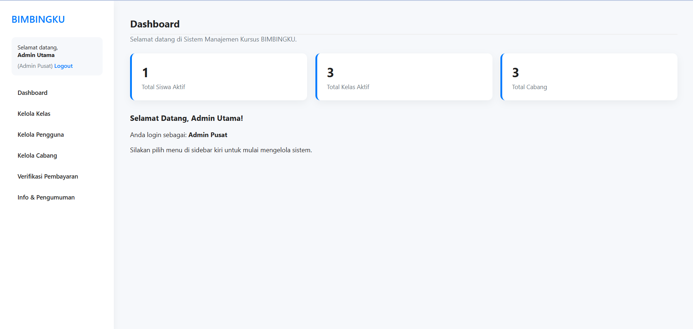

Tugas 12: Backend Upload Foto (Studi Kasus: BIMBINGKU)
Nama: Ageng Prayogo
NRP: 5025241225
Kelas: A
Proyek ini bertujuan untuk mengimplementasikan backend upload file (foto) menggunakan PHP, berdasarkan studi kasus "Sistem Manajemen Kursus BIMBINGKU".
Deskripsi & Konsep Implementasi
Aplikasi ini adalah implementasi dari **Modul Pendaftaran Siswa** yang dispesifikasikan dalam dokumen studi kasus. Fokus utamanya adalah pada proses backend untuk menangani file upload dengan aman.
Implementasi ini mencakup frontend (HTML/CSS/JS) untuk formulir pendaftaran dan backend (PHP) untuk memproses data, dengan fungsionalitas sebagai berikut:
- Formulir Pendaftaran: Sebuah halaman HTML (`register.html`) dengan formulir lengkap untuk data siswa dan input file untuk foto.
- Validasi Sisi Klien: JavaScript digunakan untuk memberikan *preview* foto yang di-upload dan memvalidasi ukuran file (maks 2MB) serta tipe file (JPG/PNG) sebelum dikirim ke server.
- Backend (register_process.php): Script PHP yang menerima data `POST` dan `$_FILES`.
- Keamanan File: Backend melakukan validasi ulang di sisi server untuk tipe file dan ukuran untuk memastikan keamanan.
- Penyimpanan File: Membuat nama file unik dan memindahkannya ke folder `uploads/students/` menggunakan `move_uploaded_file`.
- Penyimpanan Data: Menyimpan data teks dan nama file foto ke database MySQL.

Tampilan formulir pendaftaran siswa dengan fitur upload dan preview foto, sesuai studi kasus.
Hasil Tugas
Demo di bawah ini adalah implementasi formulir pendaftaran siswa "BIMBINGKU" dengan backend upload foto yang fungsional, berdasarkan kode yang ada di dalam PDF studi kasus.
Lihat Demo Live
Lihat Kode Sumber